未対応が複数ある受信箱未対応の問い合わせを件名・相手・状態で見分けられます。1440px変更前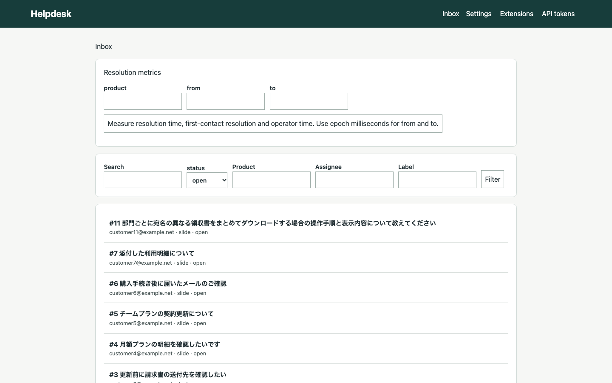変更後1024px変更前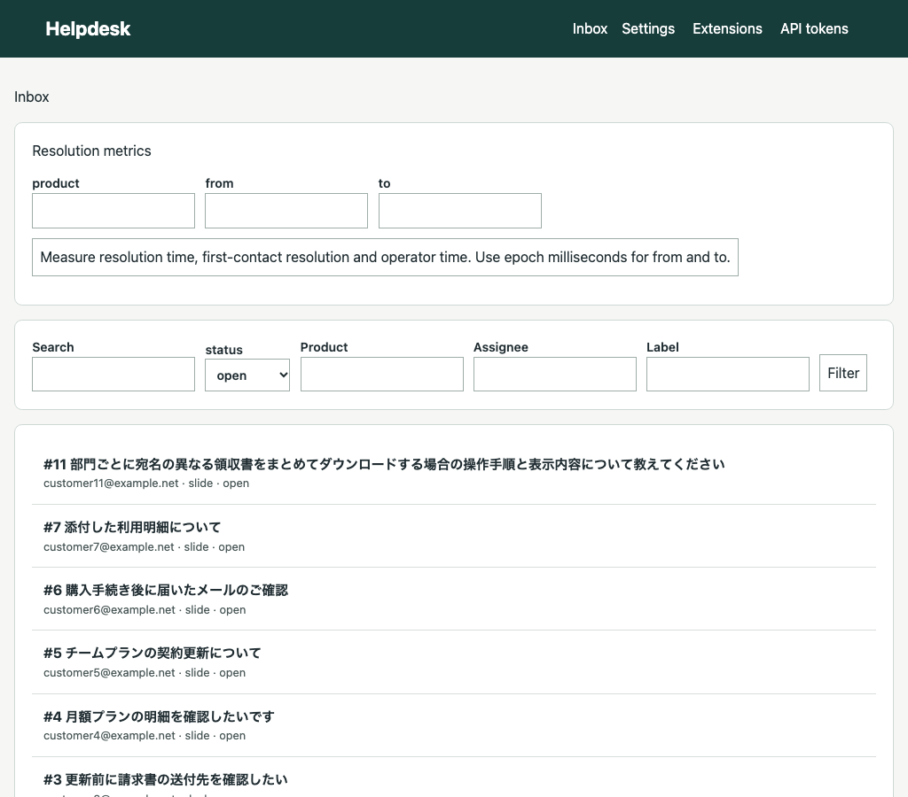変更後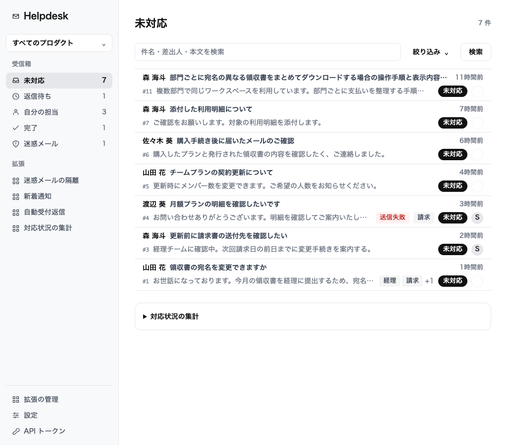375px変更前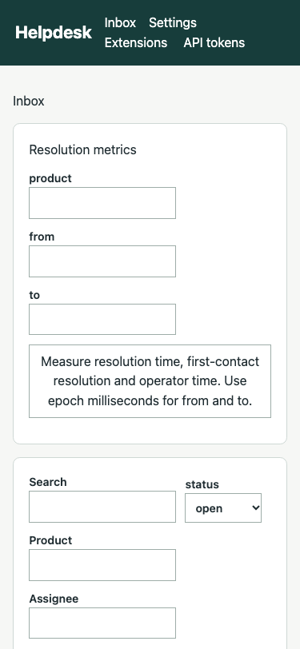変更後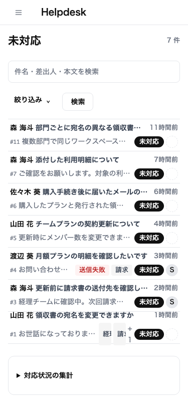
受信のみメッセージの種類と送信状態を本文のすぐそばに示します。1440px変更前変更後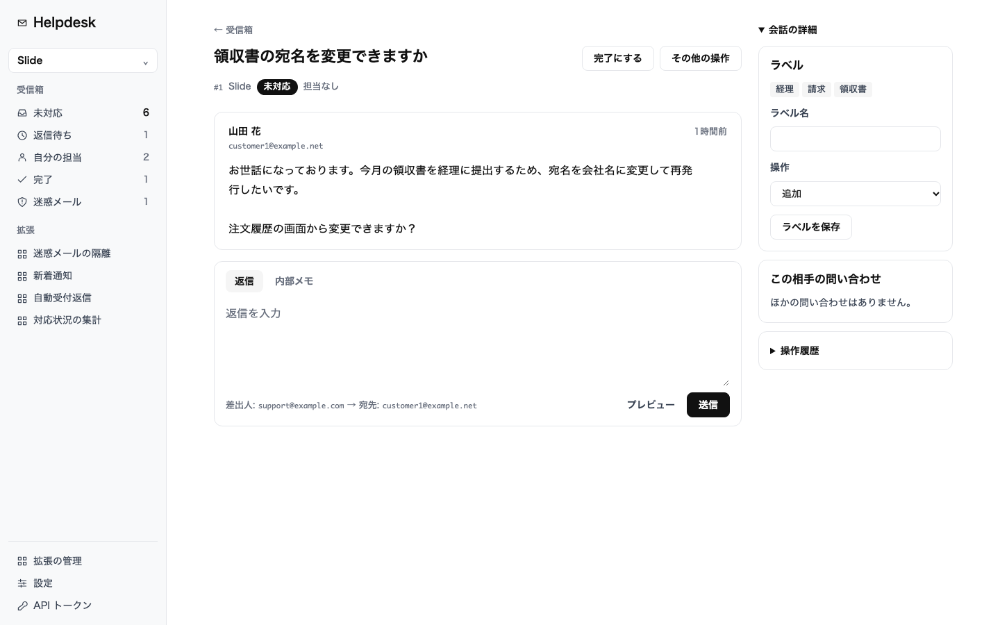1024px変更前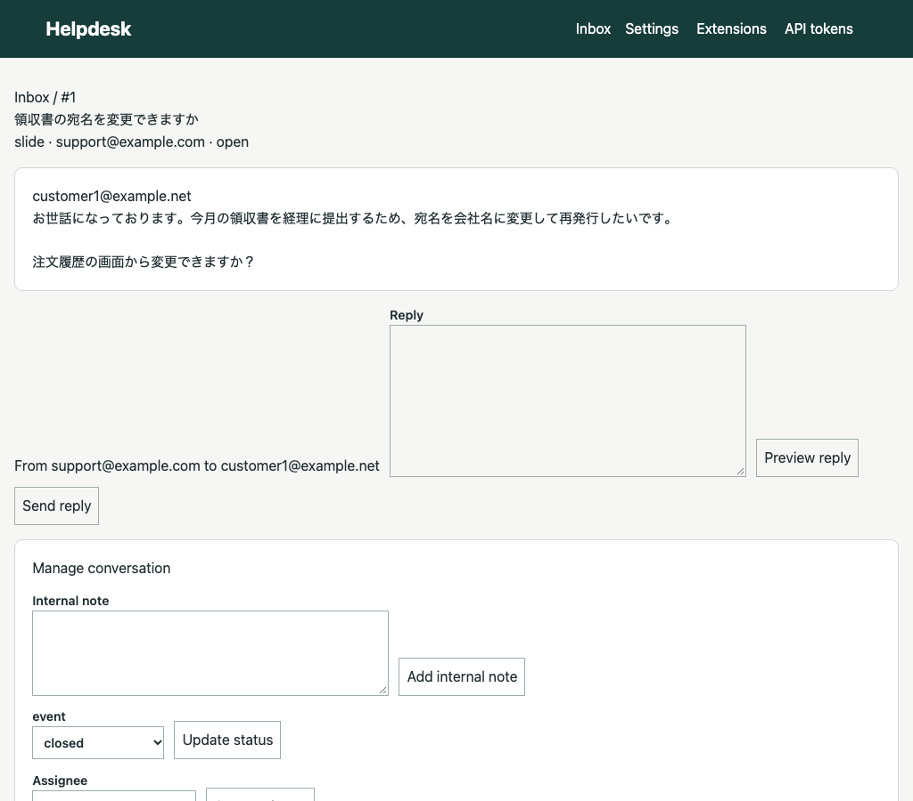変更後375px変更前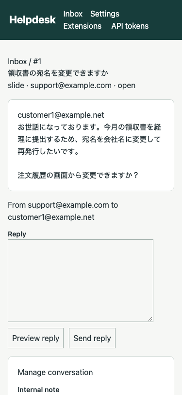変更後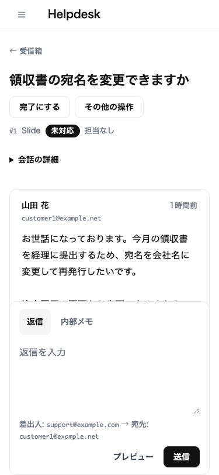
内部メモへの切り替え差出人と宛先を確認しながら、返信と内部メモを切り替えられます。1440px変更前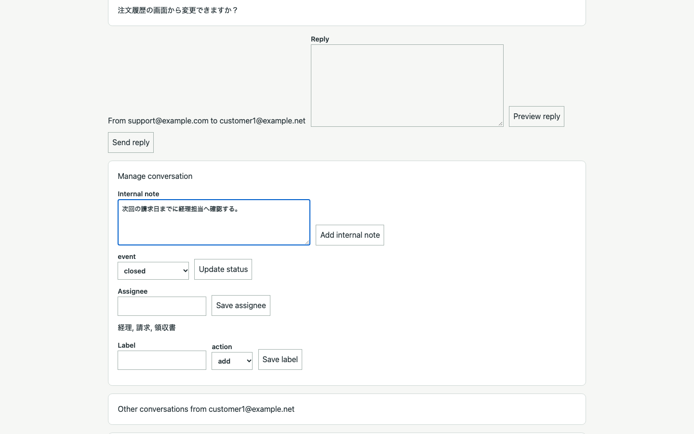変更後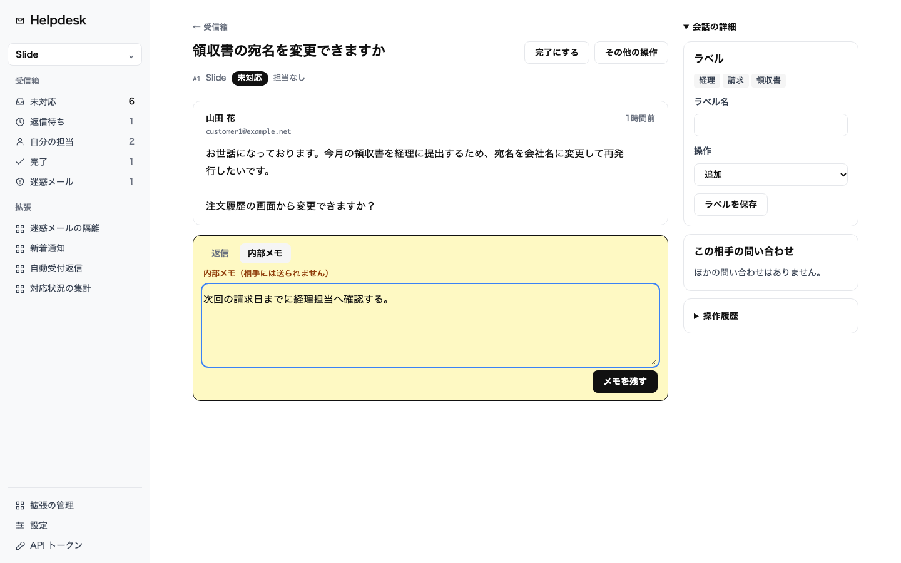375px変更前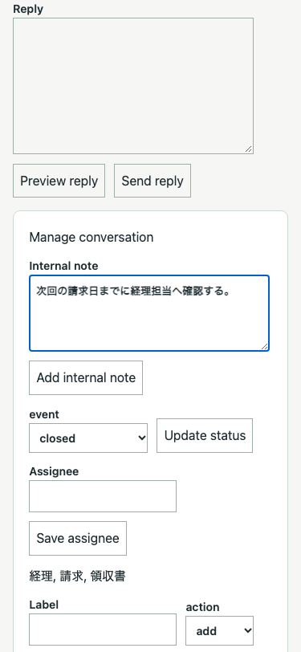変更後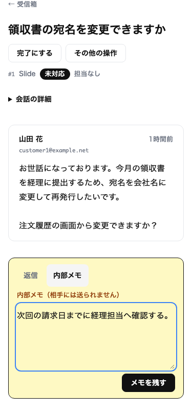